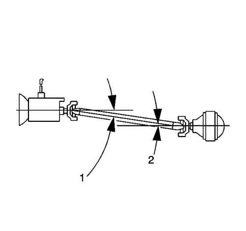
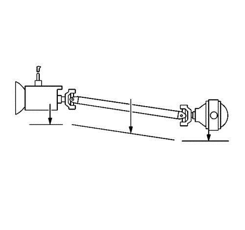
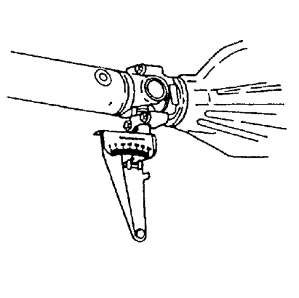

Medición de los ángulos de trabajo de la transmisión
Herramientas especiales
| • | Inclinómetro del eje motriz J-23498-A, o equivalente |
| • | Adaptador del inclinómetro del eje motriz J-23498-20, o equivalente |
Nota: Este procedimiento de medición está destinado a medir solamente los ángulos de trabajo de las juntas en U, no los ángulos de trabajo del conjunto del acoplador o la junta de velocidad constante.
Nota: Este procedimiento está diseñado para ser usado en vehículos cuando se cumplan las siguientes condiciones:| • | Las alturas de suspensión del vehículo están dentro de las pautas de especificación. |
| • | El vehículo no muestra señales de modificaciones post-venta que puedan afectar a los ángulos de trabajo de la transmisión. |
| • | El vehículo no muestra señales de daño por accidentes que puedan afectar a la posición del eje o ejes motrices, el cojinete de apoyo del árbol de transmisión, si lo hay, o la caja de transferencia o de la transmisión, si la hay. |

El ángulo de trabajo de la junta en U está formado por la diferencia entre los ángulos de cualesquiera 2 árboles que intersecten. Los sistemas de árbol de transmisión que tienen una junta en U tienen un ángulo de trabajo; los sistemas con 2 juntas en U tienen 2 ángulos de trabajo, etc. En un sistema de transmisión típico de una pieza con 2 juntas en U, los ángulos de trabajo están delante (1) y detrás (2):
| • | El ángulo de trabajo delantero (1) está formado por la intersección del árbol de salida de la caja de transferencia o de la transmisión y el árbol de transmisión. |
| • | El ángulo de trabajo trasero (2) está formado por la intersección del árbol de transmisión y el piñón del eje motriz. |
Nota: Al medir y evaluar los ángulos de trabajo de la junta en U, observe lo siguiente:
| • | Ningún ángulo de trabajo de junta en U debe ser igual a cero. Un ángulo de 0 grados puede causar un desgaste prematuro de la junta en U debido a la falta de rotación de los cojinetes de aguja en la junta en U. |
| • | Ningún ángulo de trabajo de junta en U debería exceder 4 grados. |
| • | Sistemas de transmisión que sólo contienen una junta en U: el ángulo de trabajo de la junta en U debería estar dentro del intervalo especificado en este procedimiento. |
| • | Sistemas de transmisión que contienen 2 o 3 juntas en U: los 2 ángulos de junta en U formados con el eje de transmisión que contiene 2 horquillas soldadas están diseñados para cancelarse entre sí durante el funcionamiento. Estos 2 ángulos de junta en U que trabajan o se cancelan deben ser iguales entre sí dentro del intervalo especificado en este procedimiento para suministrar una cancelación efectiva de las juntas en U. |
| • | Sistemas de transmisión que contienen 3 juntas en U: el ángulo de junta en U formado por el árbol de transmisión que contiene sólo una horquilla soldada es un ángulo impar, no cancelado. Este ángulo de trabajo debe estar dentro del intervalo especificado en este procedimiento. |
| • | Oriente siempre el inclinómetro del eje motriz J-23498-A o equivalente, de forma que esté de cara al mismo lado del vehículo para cada medición tomada. |

| • | Asegúrese de registrar con precisión las mediciones tomadas en un diagrama, similar al que se indica. |
Procedimiento de medición
Nota: Si es necesario usar el adaptador del inclinómetro del eje motriz J-23498-20 o un adaptador equivalente, verifique primero la precisión del adaptador del inclinómetro del eje motriz J-23498-20 o equivalente inspeccionando el ángulo de una junta accesible usando el inclinómetro del eje motriz J-23498-A o equivalente, y a continuación inspeccionado el mismo ángulo de junta usando el adaptador del inclinómetro del eje motriz J-23498-20 o equivalente.
- Para vehículos con ejes macizos, asegúrese de que el vehículo tiene un depósito lleno de combustible o la cantidad equivalente de peso en la ubicación correcta para simular un depósito completo. El peso de 3,8 L (1 galón) de gasolina es aproximadamente 2,8 kg (6,2 lib.).
- Elevar el vehículo y soportarlo de manera segura. En vehículos con ejes macizos, asegúrese de que el eje motriz está soportado a la altura de circulación -- carrocería del vehículo soportada por los componentes de suspensión. La distancia de suspensión no afectará a los ángulos de la transmisión en vehículos con ejes motrices montados directamente. Asegúrese de que las ruedas pueden rotar libremente. Consultar Elevación del vehículo con un gato .
- Para vehículos con sistemas de transmisión de 2 piezas, compruebe la alienación lateral de los árboles de transmisión antes de proceder:
| 3.1. | Desde la parte inferior de los árboles de transmisión, mire hacia abajo a lo largo de los árboles desde la parte delantera hacia la parte de atrás. Compruebe la alineación de los árboles entre sí. |
| 3.2. | Desde la parte inferior de los árboles, si los árboles de transmisión no están alineados entre sí en línea recta, se tiene que ajustar la alineación lateral de los árboles de transmisión antes de proceder. |
El conjunto de cojinete de apoyo de árbol de transmisión se puede reubicar ligeramente a un lado para mejorar la alineación de los árboles. Asegúrese de no crear una condición de eliminación contra el escape o cualquier otro componente.
- Ponga el cambio en PUNTO MUERTO.
- Limpie la corrosión o las materias extrañas de los sombreretes de cojinete de junta en U.
- Desmonte cualquier anillo de seguridad de sombrerete de cojinete de junta en U que pueda interferir con la colocación correcta del inclinómetro del eje motriz J-23498-A, o equivalente.

- Realice la primera medición para todos los sistemas de transmisión:
| 7.1. | Gire el árbol de transmisión para alinear las bridas de horquilla que están más atrás verticalmente. |
| 7.2. | Monte el inclinómetro del eje motriz J-23498-A o equivalente en el sombrerete de cojinete de junta en U inferior de la horquilla más posterior. Esta horquilla puede ser parte del árbol de transmisión, del árbol de entrada del tubo de par o del árbol del piñón del eje motriz. Mida y registre el ángulo del árbol. |
- Para sistemas de transmisión con 2 o 3 juntas en U, realice esta medición adicional:
Sin girar la transmisión, monte el inclinómetro del eje motriz J-23498-A o equivalente en el sombrerete de cojinete de junta en U inferior de la horquilla más anterior alineada verticalmente. Esta horquilla puede ser parte de un árbol de transmisión, de un árbol de salida de transmisión o de un árbol de salida de caja de transferencia. Mida y registre el ángulo del árbol.
- Realice la segunda medición para todos los sistemas de transmisión:
| 9.1. | Gire el árbol de transmisión 1/4 de vuelta para alinear verticalmente las bridas de la horquilla más anterior que concuerda con la horquilla más posterior. |
| 9.2. | Monte el inclinómetro del eje motriz J-23498-A o equivalente en el sombrerete de cojinete de junta en U inferior de la horquilla que concuerda con la anterior. Esta horquilla puede ser parte de un árbol de transmisión, de un árbol de salida de transmisión o de un árbol de salida de caja de transferencia. Mida y registre el ángulo del árbol. |
- Para sistemas de transmisión con 3 juntas en U, realice esta medición adicional:
Sin girar la transmisión, monte el inclinómetro del eje motriz J-23498-A o equivalente en el sombrerete de cojinete de junta en U inferior de la horquilla más anterior alineada verticalmente. Esta horquilla puede ser parte de un árbol de salida de transmisión o de un árbol de salida de caja de transferencia. Mida y registre el ángulo del árbol.
- Desmonte el inclinómetro del eje motriz J-23498-A, o equivalente.
- Monte los anillos de seguridad de sombrerete de cojinete de junta en U antes de montar el inclinómetro del eje motriz J-23498-A o equivalente.
- Calcule el ángulo de trabajo de la junta en U en cada intersección de los dos árboles.
Substraiga el número más pequeño del más grande para obtener el ángulo de trabajo. Por ejemplo: Si el piñón del eje motriz tiene un ángulo de 16 grados y el árbol de transmisión que conecta tiene un ángulo de 13 grados, el ángulo de trabajo de dicha intersección es 3 grados.
- Para sistemas de transmisión con una junta en U, compare el ángulo de trabajo con la siguiente pauta de especificación:
Especificación - Pauta
Sistemas de transmisión que sólo contienen 1 junta en U: el ángulo de trabajo de la junta en U debería estar entre 1/2 y 3/4 grados.
- Para sistemas de transmisión con 2 o 3 juntas en U, compare la diferencia entre los ángulos de trabajo de las juntas en U que se cancelan con las siguientes pautas de especificación:
Especificación - Pauta
Intervalo permisible de diferencia entre los ángulos de trabajo de junta en U que se cancelan: 0,25 a 1,0 grados
- Para sistemas de transmisión con 3 juntas en U, compare el ángulo de trabajo de la junta en U impar, no cancelada con la siguiente pauta de especificación:
Especificación - Pauta
Sistemas de transmisión que contienen 3 juntas en U: el ángulo de trabajo de la junta en U impar, no cancelado, debería estar entre 1/10 y 1/2 grados.
- Cualquier ángulo de trabajo que no esté dentro de las pautas de especificación se tiene que ajustar.
| © Copyright Chevrolet Europe. All rights reserved |